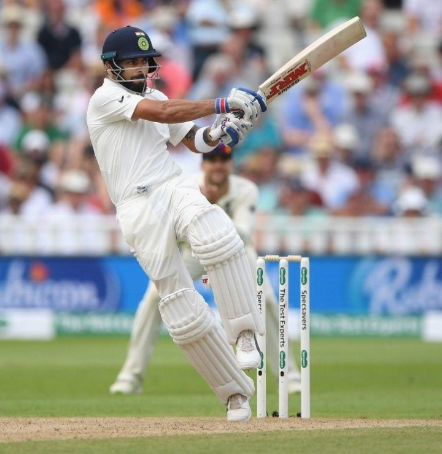

Virat Kholi

Virat Koli was born on November 5 1988 in Delhi,India.He was aged 30 years.His height is 1.75m(5.74feet).His last ODI was on 8 August 2019 with West Indies.
Virat koli is an Indian cricketer who currently captains the Indian national team.A right handed top order batsman,Kholi is regardes as one of the best batsman in the world.He plays for RCB in the IPL,and has been the teams captain since 2013.Stats
| Format |
Match |
Runs |
Average |
SR |
| Test 2011 |
77 |
6613 |
53.8 |
57.3 |
| ODI 2008 |
239 |
11520 |
50.3 |
93.2 |
| T20I 2010 |
70 |
2369 |
49.4 |
135.8 |
| 1stclass |
109 |
8862 |
54 |
57.4 |
| T20 2007 |
269 |
8475 |
40.5 |
133.7 |
| List A 2006 |
273 |
12962 |
58.6 |
93.3 |